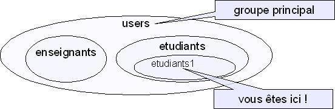

Tous les fichiers ont un propriétaire et appartiennent à un groupe. C'est la base pour définir les permissions sur ce fichier. On pourra ainsi donner des permissions différentes :
Lister au format long le contenu du répertoire nous permet de voir les infos suivantes :
Sur le schéma ci-dessus, on peut lire, par exemple, que le fichier Max.java
appartient à g32671 et a été placé dans le groupe users.
Nous vous disions qu'il existait un groupe principal (le premier donné par la commande groups) et que c'est celui qui serait utilisé par défaut lors de certaines opérations.
C'est le cas par exemple ici,
quand l'utilisateur g32671 a créé son fichier Max.java,
ce fichier s'est retrouvé dans le groupe par défaut users.
Or,

le groupe users contient à la fois le groupe étudiants/étudiants1 et aussi le groupe enseignants.
Comme nous avons vu que nous pouvions donner des permissions différentes :
users,
les utilisateurs qui appartiennent au même groupe que le fichier sont à la fois
des étudiants/étudiants1
et des enseignants.
On ne pourrait donc pas distinguer les permissions des étudiants de celles des enseignants.
Pour faire la distinction entre étudiants et enseignants, il faudrait changer le groupe auquel appartient le fichier.
chgrp etudiants1 Max.java indique que le fichier Max.java doit être placé dans le
groupe etudiants1 (le propriétaire du fichier peut exécuter cette commande mais il doit obligatoirement
indiquer un groupe auquel il appartient).
Il existe aussi une commande que seul l'administrateur peut exécuter chown g32000 Max.java
qui change le propriétaire du fichier Max.java à g32000.
tdLinux dans votre dossier personnel ;
tdLinux.
tdLinux.
tdLinux
pour que les enseignants puissent avoir des permissions différentes de celles
des étudiants .
Les fichiers dans mon dossier personnel ne sont pas automatiquement à moi ?
Non. En pratique c'est généralement le cas, mais on peut très bien trouver dans un dossier personnel un fichier qui appartient à quelqu'un d'autre.